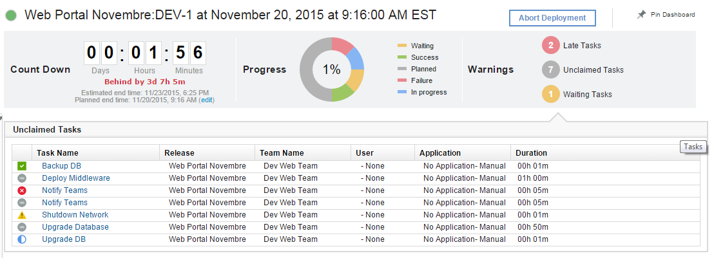
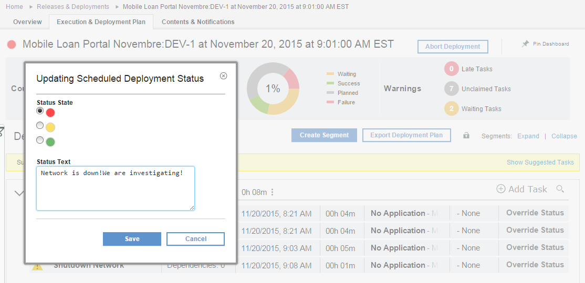
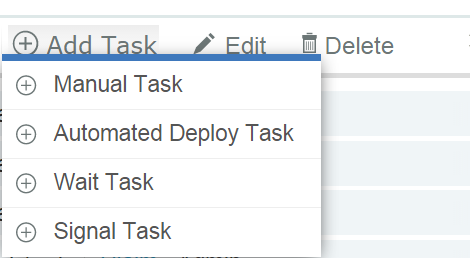

This article was originaly published in 2015.11.25
6.1.2.2 - November 25, 2015
IBM UrbanCode Release 6.1.2.2 is a Fix Pack release containing fixes and a new beta feature: Cross Plan Dependencies
New Scheduled Deployment Dashboard
There is a new deployment dashboard containing new widgets to help visualize the deployment’s progress.
– A widget that shows the progress of the deployment as well as the proportion of tasks sorted by status. This widget is clickable and will show a detailed list of tasks when the user clicks on one of the colored portions.
– Warning widgets have been added to show tasks in a specific state like: Late Tasks, Unclaimed Tasks or Waiting Tasks. The same way those widgets are clickable and will provide more details about those tasks.

It is now possible to add a status to a deployment.

Beta Feature “Cross Plan Dependencies”
This feature can be enabled by adding the following flag to the server.properties:
feature.crossplan.dependency.enabled=yes
Enterprise Deployment Events
Enterprise Deployment Events can be created from the collaborative calendar.
An Enterprise Deployment Event can contain multiple related deployments that will be part of a major release deployment.
On the Enterprise Related Deployment Dashboard users can then see the progress of all scheduled deployments participating in the event.
The dashboard also provides widgets that will help to filter and view tasks by tags or status across all of the deployments involved in that event.

Cross Plan Dependencies
In IBM UrbanCode Release 6.1.2.0 task level dependencies within the plan were made available. In IBM UrbanCode Release 6.1.2.2 it is possible to manage dependencies across deployments within an event.
There are two new types of tasks: Wait Tasks and Signal Tasks. Multiple plans can then depend (Wait) on a task that has to be completed in another plan.
Signal Tasks will automatically notify other plans that its activity is complete. Task waiting on that signal will be unable to start until all tasks signalling that activity within the event are complete.

Signal tasks are associated with a checkpoint and will notify other plans when that checkpoint is completed.
Waiting tasks are also associated a checkpoint and will be listening on notifications from signal tasks from other plans to know when that checkpoint has been completed.
Checkpoints can be reusable and will be available from any plans.
Signal and Waiting tasks can be added to the deployment plan and then be reusable from one release to another.
{kind=link}
{kind=link}
{kind=link}
{kind=link}